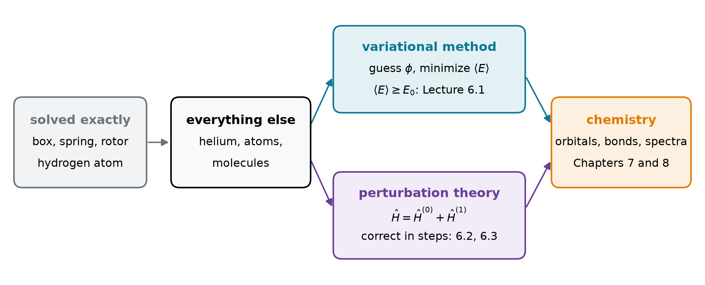
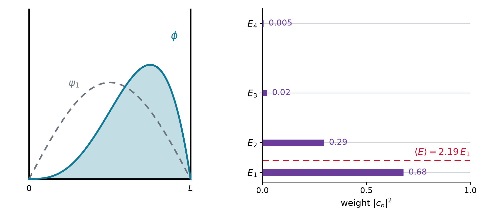
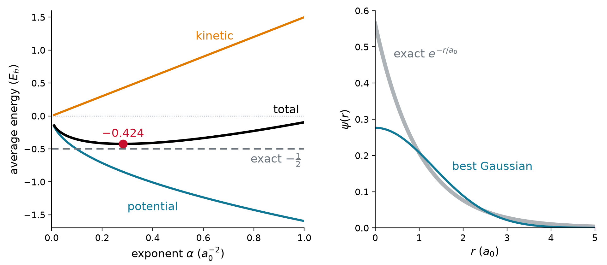
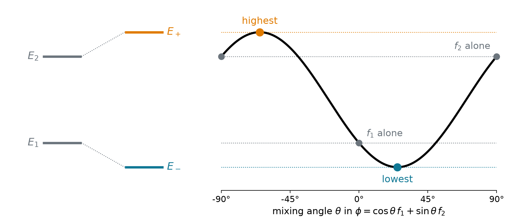
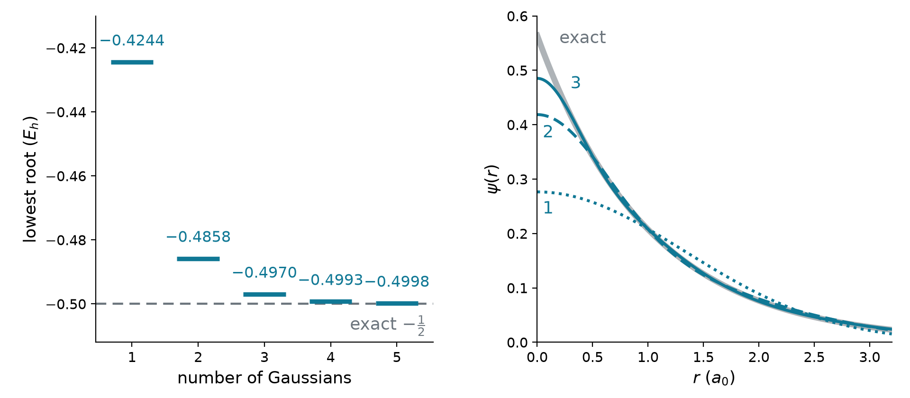

Chem 3240 · Lecture 6.1
Solved exactly: box, spring, rotor, hydrogen. Helium adds one term that no formula handles (atomic units):
\hat{H} = \underbrace{-\tfrac{1}{2}\nabla_1^2 - \frac{2}{r_1}}_{\text{electron 1}}\;\;\underbrace{-\,\tfrac{1}{2}\nabla_2^2 - \frac{2}{r_2}}_{\text{electron 2}}\;+\;\underbrace{\frac{1}{r_{12}}}_{\text{repulsion}}

A normalized guess \phi, a trial function, has the average energy \langle E\rangle = \langle\phi|\hat{H}|\phi\rangle
1. Expand in the exact states (3.6), whether or not anyone can write them down
\phi = \sum_n c_n\,\psi_n, \qquad \hat{H}\psi_n = E_n\psi_n, \qquad E_0 \leq E_1 \leq E_2 \leq \dots
2. Average: a measurement returns E_n with probability |c_n|^2
3. Bound: every E_n \geq E_0, and the probabilities add to 1
\langle E\rangle = \sum_n|c_n|^2\,E_n \;\geq\; E_0\sum_n|c_n|^2 = E_0

E_\phi = \frac{\langle\phi|\hat{H}|\phi\rangle}{\langle\phi|\phi\rangle} \;\geq\; E_0
Kinetic energy from the slope alone (integrate by parts; \phi vanishes at the ends):
\langle\phi|\hat{T}|\phi\rangle = -\frac{\hbar^2}{2m}\int\phi\,\phi''\,dx = \frac{\hbar^2}{2m}\int\left(\phi'\right)^2dx
Guess \phi = x(L - x) for the ground state of a box. Exact: E_1 = \pi^2\hbar^2/2mL^2. What energy does the guess give?
\phi'' = -2 \quad\Longrightarrow\quad \hat{H}\phi = -\frac{\hbar^2}{2m}\phi'' = \frac{\hbar^2}{m}
E_\phi = \frac{\dfrac{\hbar^2}{m}\displaystyle\int_0^L x(L - x)\,dx}{\displaystyle\int_0^L x^2(L - x)^2\,dx} = \frac{\hbar^2L^3/6m}{L^5/30} = \frac{5\hbar^2}{mL^2} = 1.013\,E_1
Guess \phi = e^{-\alpha r^2} with the exponent \alpha free. Atomic units: \hat{H} = -\frac{1}{2}\nabla^2 - 1/r, exact E = -\frac{1}{2}E_h
Compute the average kinetic and potential energy
\langle T\rangle = \frac{3\alpha}{2}, \qquad \langle V\rangle = -2\sqrt{\frac{2\alpha}{\pi}}, \qquad E(\alpha) = \frac{3\alpha}{2} - 2\sqrt{\frac{2\alpha}{\pi}}
Minimize
\frac{dE}{d\alpha} = \frac{3}{2} - \sqrt{\frac{2}{\pi\alpha}} = 0 \quad\Longrightarrow\quad \alpha = \frac{8}{9\pi}, \qquad E = -\frac{4}{3\pi}\,E_h = -0.424\,E_h

Without the repulsion, helium is two He^+ ions and its state is a product of two 1s orbitals. Guess that product, \phi = e^{-\zeta(r_1 + r_2)}, with the charge \zeta free. Best \zeta? (Atomic units, Z = 2.)
E(\zeta) = \underbrace{\zeta^2}_{\text{kinetic}}\;\underbrace{-\,2Z\zeta}_{\text{attraction}}\;+\;\underbrace{\tfrac{5}{8}\zeta}_{\text{repulsion}} = \zeta^2 - \tfrac{27}{8}\zeta
\frac{dE}{d\zeta} = 2\zeta - \tfrac{27}{8} = 0 \quad\Longrightarrow\quad \zeta = \tfrac{27}{16} = 1.69, \qquad E = -77.5\ \text{eV}
\phi = c_1f_1 + c_2f_2 + \dots + c_Nf_N
E = \frac{c_1^2H_{11} + 2c_1c_2H_{12} + c_2^2H_{22}}{c_1^2S_{11} + 2c_1c_2S_{12} + c_2^2S_{22}}
H_{ij} = \langle f_i|\hat{H}|f_j\rangle \quad\text{matrix elements (3.5)} \qquad\qquad S_{ij} = \langle f_i|f_j\rangle \quad\text{overlaps}
Clear the fraction, differentiate with respect to c_1, and set \partial E/\partial c_1 = 0:
E\left(2c_1S_{11} + 2c_2S_{12}\right) = 2c_1H_{11} + 2c_2H_{12}
Collect the terms, and repeat for c_2:
\begin{aligned} c_1\left(H_{11} - ES_{11}\right) + c_2\left(H_{12} - ES_{12}\right) &= 0\\ c_1\left(H_{12} - ES_{12}\right) + c_2\left(H_{22} - ES_{22}\right) &= 0 \end{aligned}
\phi = \sum_{n=1}^N c_n f_n \qquad\Longrightarrow\qquad \mathbf{H}\,\mathbf{c} = E\,\mathbf{S}\,\mathbf{c}, \qquad \det\left(\mathbf{H} - E\,\mathbf{S}\right) = 0
H_{ij} = \langle f_i|\hat{H}|f_j\rangle, \qquad S_{ij} = \langle f_i|f_j\rangle
\mathbf{H} = \begin{pmatrix} E_1 & v\\ v & E_2\end{pmatrix} \quad\Longrightarrow\quad E_\pm = \frac{E_1 + E_2}{2} \pm \sqrt{\left(\frac{\Delta}{2}\right)^2 + v^2}

Two identical atomic orbitals f_1, f_2 on neighboring atoms: E_1 = E_2 = \alpha, coupling v = \beta. Energies and mixtures?
\Delta = 0: \qquad E_\pm = \alpha \pm \beta
c_1(\alpha - E) + c_2\beta = 0 \quad\Longrightarrow\quad c_2 = \pm c_1: \qquad \phi_\pm = \frac{f_1 \pm f_2}{\sqrt{2}}
Add f_2 = x^2(L - x)^2 to the parabola f_1 = x(L - x). Find the best energy of c_1f_1 + c_2f_2 in the box.
\mathbf{H} = \begin{pmatrix} \frac{1}{6} & \frac{1}{30}\\[2pt] \frac{1}{30} & \frac{1}{105}\end{pmatrix}, \qquad \mathbf{S} = \begin{pmatrix} \frac{1}{30} & \frac{1}{140}\\[2pt] \frac{1}{140} & \frac{1}{630}\end{pmatrix} \qquad (L = 1,\ \text{units of } \hbar^2/mL^2)
\det\left(\mathbf{H} - E\,\mathbf{S}\right) = 0: \qquad E = 4.93487 \qquad\qquad \text{exact: } \pi^2/2 = 4.93480
E, C = eigh(H, S). Error 0.0015%: one more function, 900 times closer
Any trial function gives an average energy at or above the true ground-state energy, because every state is a mixture of the exact levels. So guess, compute \langle\phi|\hat{H}|\phi\rangle/\langle\phi|\phi\rangle, and minimize: a Gaussian gives hydrogen -0.424\,E_h, a screened charge \zeta = 27/16 gives helium -77.5 eV. With a sum of fixed basis functions the minimization becomes the matrix equation \mathbf{H}\mathbf{c} = E\,\mathbf{S}\mathbf{c} and the secular determinant. Two functions that mix are the two-level problem, with roots pushed apart, and more basis functions can only lower the energy: the working method of quantum chemistry.
Chem 3240 · Quantum Mechanics